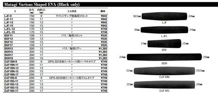
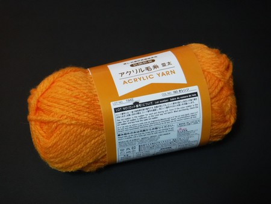

私のお気に入り
フライキャスティング練習用 ヤーンロッド 自作の道具たち
フライフィッシングを始めたばかりの方が、キャスティングの原理・基礎を覚える時にとても役立つ、「ヤーンロッド」と呼ばれるアイテムがあることを知ったのは、90年代始め頃に購入した、ダグ・スウィッシャー氏の「ベーシック・フライキャスティング」というビデオでした。
ごく短い、ティップセクションだけのようなロッドに、オレンジ色のヤーンを通しただけのシンプルなものですが、キャスティングの基礎の習得、基本のループの作り方や手首の使い方、オープン／クローズドループの作り方の違い、などなど、さまざまなことが学べるのだなと感心しました。また、室内でも練習できますので、みっちりと基本を身に付けることができます。（ティップを天井に当てないようにご注意！）
そのビデオを見た当時は、とりあえず２ピースロッドのティップセクションに、毛糸を数本撚って太くしたものを通して練習した覚えがあります。
そのから既製品も販売されていたのでしょうが、90年代前半にはネットも普及しておらず、フライ用品店でも見かけたことが無かったので、既製品を買うことはありませんでした。現在でも、フライフィッシング用のあまたあるアイテムの中においては、あまり知られておらず、メディアで紹介されることもほとんどないように思われます。
現在（2020/09/30 時点）で既製品を調べてみますと、各社から、基本的には同じですが、微妙に仕様と値段が異なる製品が販売されています。
Orvis 社
MaxCatch 社

オービス社 プラクティキャスター（ティムコ）

しかしながら、僕のような「無産階級・低所得」の人物にとっては、手の出ない値段でした。（笑） 下手をしたら中古のフライロッドの良品や、MaxCatch 社の新品ロッドが買えてしまいます！
そこで、自作を検討してみます。
※以下の方法は、あくまでも机上の推論で、僕はまだ、予算不足により実際に製作していないので、読者の皆さんが試してみて、もし上手く行かなければ、お詫び申し上げます。
必要な材料
- フライフィッシングを始めるために購入したロッド
３番くらいの低番手で、スローアクションのロッドがヤーンロッドには、向いているかもしれませんが、さほど問題はないでしょう。 - ロッドビルティング用 EVA素材のリアグリップ
既製品には、たいていコルクグリップが用いられていますが、コルク製グリップは単体で買うと、それなりの価格がします。コルクの質感、色合い、手触りの良さは捨てがたいのですが、ここは実用性重視で黒いEVA素材にしました。
自作品にそれほどお金をかけても本末転倒ですし、MaxCatch 社の製品なら、安価に購入できます。 - グリップ用のパーツは、事前に、フライロッドのブランク太さを確認してから購入すると良いでしょう。手持ちのフライロッド（2ピースならティップセクション、3ピース以上のロッドであれば、ティップ側数本を継いで、グリップ側の、最も太い部分の外径を確認しておきます。）
最近では、大手の釣具量販店には、ロッドビルディング用品が揃えてあるお店が多くなりました。通販でグリップ用のパーツを購入する場合、百円ショップで「ノギス」という、円筒形をした物体の直径や内径を測るための工具（プラスチック製）を買って、ブランク太さを確認しておくと確実です。


全長: 5フィート(約1.5m) ヤーン糸の直径:約8mm
オレンジ、ピンク等視認性の良い色がお勧め
画像は Amazon ウェブサイトより引用
わざわざ、ヤーンを購入しなくても、ダイソーなどに売っているアクリル毛糸の派手な色（黄色、オレンジ、赤など）を購入し、適当な長さに切って、２～３本くらいを手で撚り合わせて太くすれば十分使えます。

まぁ、ヤーンを買っておけば、当然ながら、エッグフライなどをタイイングしたり、インジケーターを自作できる利点はありますが。
ロッドのブランク太さとグリップ用素材の穴の大きさに違いがあった場合、紙を巻いて調節します。
作成方法
- 手持ちのフライロッドのティップセクション、3ピース以上のロッドであれば、ティップ側数本を継ぎます。
- ブランクの太い側をグリップ用素材の穴にはめてみて、太さを確認します。
- グリップ用素材の穴が広く、緩くてフィットしない場合には、古新聞・チラシなどを５枚ほど重ね、幅3cmくらいの短冊形に切り、ブランクにらせん状に巻き付け、直径を太くして調整します。あまりキツキツにすると、抜くのが困難になるので、気持ち、緩いくらいが良いでしょう。
- スペーサーとしての古新聞・チラシが移動しないよう、マスキングテープで、ブランク上端・下端のみをわずかな幅でブランクに仮止めします。ここで、がっちり固定してしまうと、実際の釣りにロッドを使う時にあとから取り外すのが大変になりますので注意して下さい。
練習用ロッドとしての役目が終わったらすぐに外せるように、あくまでも、仮止めにとどめておいてください。 - 巻き付けた古新聞・チラシが破れないよう、上からマスキングテープをらせん状に巻いて補強します。
- ロッドのブランクをグリップ用素材に差し込みます。
- ヤーンを適当な長さに結んで延長します。３メートルほどあれば十分でしょう。上述のスミスのヤーンですと、１袋に入っている長さは約1.5m とありますが、この長さでも十分練習できます。
- ヤーンをロッドのガイドに通して、余った部分は手元のグリップの位置で握っておきます。
いよいよ練習開始
- 基本的なオーバーヘッドでのキャスト
- サイドキャスト、逆手でのサイドキャスト
ヤーンが創り出すループをよく見ながら、ロッドを振って練習します。
友人、お子さん、お孫さんなどで、これからフライフィッシングを始めたい方がおられましたら、ぜひ準備してあげて下さい。
私のお気に入り 目次へ
サイトマップ
ホームへ
お問い合わせ